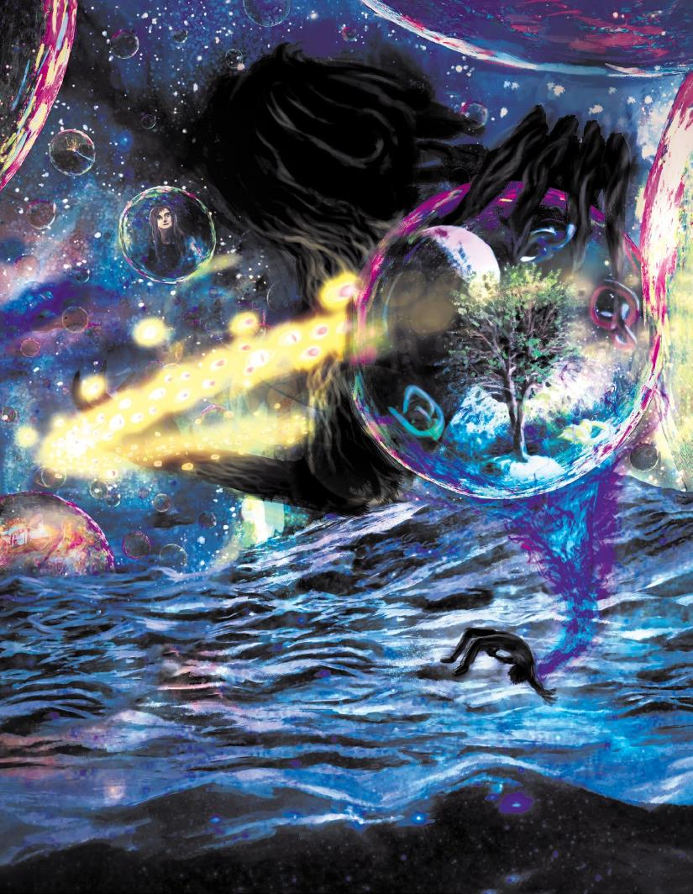

天空充满了梦想。无穷光点在无尽黑暗中闪烁。但那些不是星星。有些人比德菈距离更近，但她比他们看得都要清晰。每一个彩虹色的球体内部，都有来自世界各地的人和地方的图像在运转。其中一个，她可以看到有孩子在萨恩街头乞讨。而另一个，有女士在欢呼人群的包围中被加冕。德菈知道如果她碰触一个球体，她就会进入梦境中体验，就好像它是真的一样。如果她能找到拉斯蒂的梦想，她就能和他交谈。想办法拯救他。但她要怎样在无尽人群中找到那个梦呢？
就在那时，她看到有阴影在黑暗中移动。它的身体在天空下近乎无形，但却被一圈发光的眼睛所包围。柔风曾警告过德菈。每一只眼睛都是凡人的本质。它的梦被（Kalaraq）吞噬，它的灵魂注定要为其服务。现在，它正在寻找她。
所有凡人都在精神层面上与艾伯伦的十三个位面相连接。其中最明显的就是梦境异界·达·库尔和死者国度·杜鲁尔。当（大多数）生物睡觉的时候，他们的灵魂会被吸引到梦境异界·达·库尔，在那里形成他们的梦。当生物死亡的时候，他们的灵魂会被拉到死者国度·杜鲁尔。这是显而易见，无可争辩的事实。但是很多人并没有意识到，就像他们的灵魂会被死者国度·杜鲁尔和梦境异界·达·库尔牵引一样，他们和其他所以都位面也有着类似的联系。一个作家可能会在不知情的状况下受到妖精花园·瑟兰尼斯的启发，而艺术家的启示可能来自疯狂国度·瑟瑞奥特，士兵的勇气可能源于无尽战场·撒法拉斯。生命本身的基本能量从永恒白昼·伊瑞安流向世界，而永恒黑夜·玛伯尔毁灭生命和希望。这些无处不在的力量是灵魂的一部分，就像是重力是世界的一部分一样。
本章考察了艾伯伦的十三个位面中的每一个，建立于艾伯伦第四章提供的信息：从上一次战争中崛起。它探索并定义了每个位面的基本概念以及它们影响故事的方式——无论是作为冒险者的目的地，背景，还是作为塑造生命中每一刻的力量。
